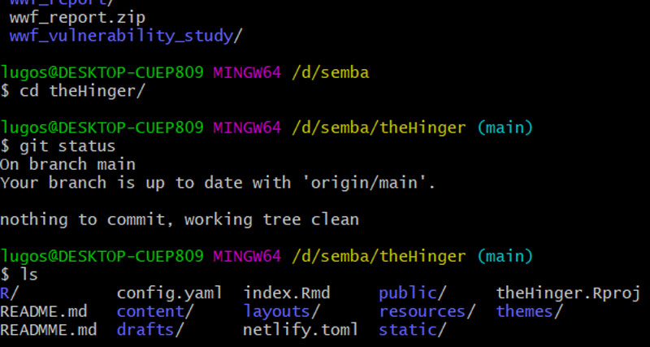

Data science has become an essential element for companies that want to …………….

Data science has become an essential element for companies that want to gain a competitive advantage. The role of data science is to put the data analytics process into a strategic context so that companies can harness the power of their data while working on their data science project. In this post I will take you through some key concepts that a keen data scientists should carefully and with intent consider and explore before take a data related consutation. A clear understanding of these key concept will guide into some key focus areas that surround the project. You will understand the differences between different stages and how to tackle them effectively depending on your end goal with the project.
Time sinks for data wrangling
Estimating the time it will take to complete a project is an important part of being a successful PhD student, researcher or consultant. A major time sink on many analytical projects is data wrangling. Often the wrangling can take longer than the analysis. Here’s some good questions to ask yourself and your collaborators. They will help you better estimate the time you need for data wrangling.
Who has the data?
If you are starting a collaboration, find out where the data is stored before starting. Many times collaborators have told me they ‘have’ or ‘can get’ the data. We start and I find out they don’t actually, literally, have the data, they just know someone who has it. So begins a lengthy negotiation about data access with the person that actually has the data. Another consideration in such cases is whether your use is consistent with original ethics approval for the data collection (if it was needed).
Is the data real?
Seriously, if its not your data, are you sure its real data? Ok this situation is rare (I hope), but it does happen that collaborators share false data.
How is the data recorded and stored?
If collaborating to get data, find out how it is stored and recorded. Is it in pdf tables, is it a single spreadsheet with good meta-data, or is it a series of nested excel sheets with cross-referenced formulas?
Has the data been analyzed before?
If it has, it is usually already cleaned and easier to work with. Also check what it has been used for. If it has been used just to generate high level summary stats, it might not be clean for detailed analysis. If its been analyzed in R or python before, even better. It is probably clean and R ready.
How big (ie computer memory) is the data?
Bigger datasets are harder to clean and error check. Very small data can be checked manually. Larger datasets can easily be checked with a combination of manual checking, graphs and programming. Very large dataset (ie bigger than your RAM, like gigabytes) present new problems. R will take a while to chug through processing steps. This can really slow down debugging, especially for complex tasks.
You may also have to develop special strategies, like breaking your data into chunks for error checking and debugging of analysis. All in all this means a 500kb file takes about the same amount of time to wrangle as a 100mb file, whereas a 1 gigabyte file might take 10 times longer.
Does the project involve spatial data?
Spatial data records dependencies between data points (coordinates). This can present new problems. You’ll obviously need to use specialist GIS tools. Processing steps can be much slower, because the algorithms to cope with spatial dependency just take longer. For example, the maths of a spatial join is much more complex (geometry) than that for a regular join of two dataframes on a single variable.
Does the project involve temporal data?
Dates and times are hard to work with. First there can be gaps in a time-series. How will you deal with that? Maybe you need to impute values before analysis?
Second, the programming of dates is just hard. I don’t know anyone that likes it. For example, what day is 30 days before the 15th March? Depends on whether its a leap year right? Annoying details like this can really slow you dowe.
Also timezones! People always send me data with times, but neglect to tell me what time zone its in (or I forget to ask perhaps).
Are you joining multiple datasets?
This is a big one. Joining datasets is a major, major, timesink.
So much so, you could basically say my niche in my field is joining different datasets in new ways. We can get new interesting results, but it can be hard (which is why not everyone is doing it).
First, joins present opportunities for errors. If you are doing a simple join on a shared variable (e.g. with dplyr’s inner_join), but the variable is coded inconsistently across dataframes you might loose data. This might be hard to detect in large datasets.
Second, joins might be based more loosely on spatial or temporal similarities. These can get fiddly. Say you want to extract wave height data at some diver survey sites. Just use the coordinates right? Well, what if the wave data doesn’t extend all the way to the coast, or the resolution is too ‘blocky’ and it misses some dive sites? Now you have to invent a way to find wave values near to dive sites, ideally only when wave data are missing. It gets fiddly.
The same issue happens with joins on times/dates. Maybe rainfall isn’t measured on the exact day you had bird counts. So perhaps now you impute rainfall to the missing day, but what algorithm of the 1000s possible are you going to use for the imputation?
Summary
So think carefully about the issues your project’s data might present. If you’re still not sure how long it might take, then try this formula recommended by a friend:
This blog is brought to you by https://semba.netlify.app